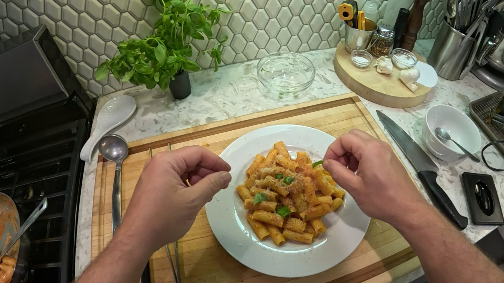
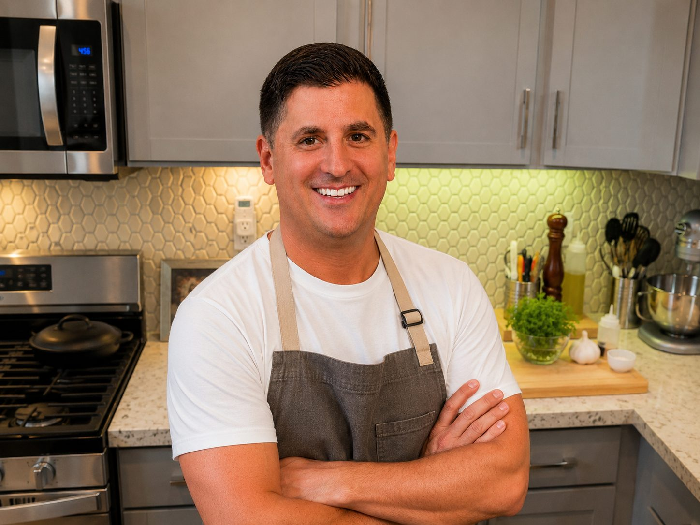
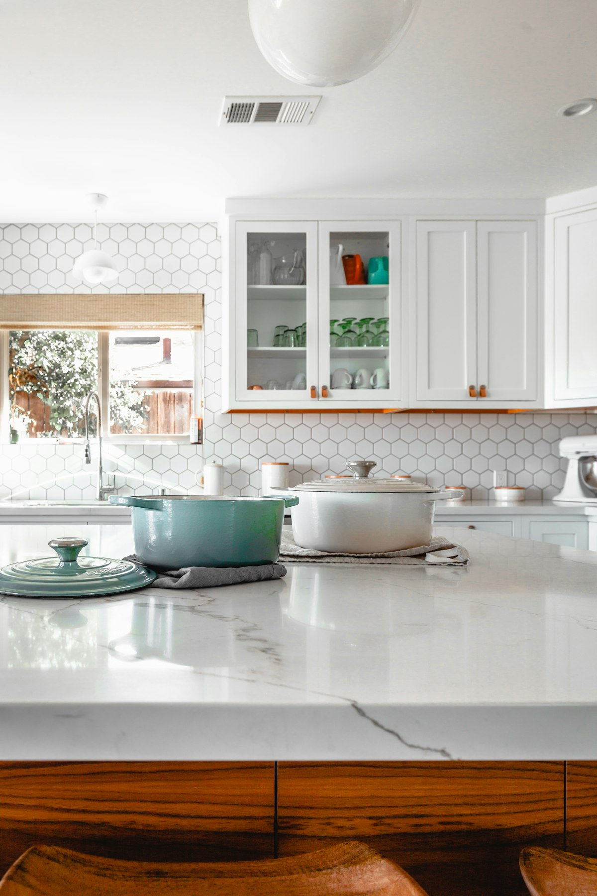

Featured
Recipes Worth Making
Approachable dishes built on solid technique—the kind of cooking you return to again and again.

Chef Passaretti
Recipes, techniques, and thoughtful cooking centered on craftsmanship, continuous improvement, and enjoying the process.
Explore RecipesFeatured
Approachable dishes built on solid technique—the kind of cooking you return to again and again.

About
This site is an extension of the YouTube channel—a quiet place for written recipes, cooking notes, and the tools that earn a permanent spot in the kitchen.
The focus is craftsmanship over trends: learning through repetition, understanding the process, and cooking food worth sharing at home.
Browse the recipesIn the Kitchen
Great cooking does not require expensive equipment. Skill and repetition matter more. The kitchen page is a small, curated list of tools that have proven useful through real use—not trends.
Visit My Kitchen
Recently Added